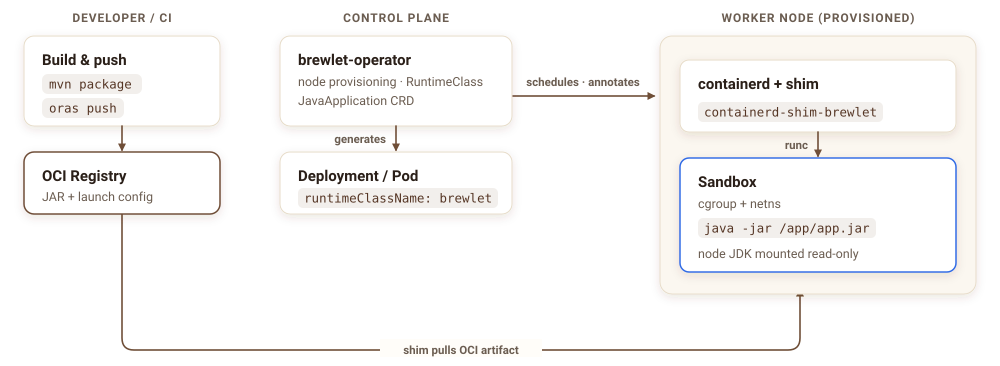
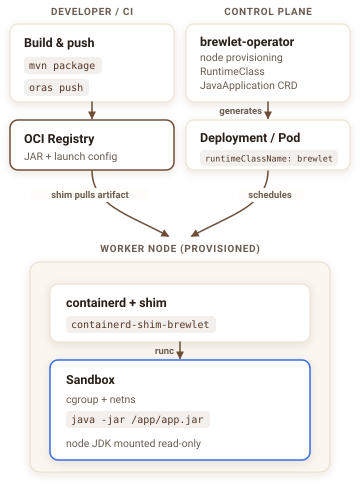

No Dockerfile
Package the JAR and launch metadata into an application-only OCI image without a Dockerfile.
Push your app (a fat JAR, a layered classpath, or a JPMS module) to an OCI registry. Brewlet runs it with a JDK installed on the node. No Dockerfile. No OS base image. No JVM bundled with every app.
Brewlet brings SpinKube's node-resident runtime model to Java.
runtime layers are versioned with the image;
unchanged layers can be cached
the node supplies the shared JDK;
each workload keeps its own JVM and heap
FROM eclipse-temurin:21-jre # you own this base + its CVEs
COPY target/app.jar /app/app.jar
ENTRYPOINT ["java","-jar","/app/app.jar"]
$ docker build -t registry/app:1.4.2 .
$ docker push registry/app:1.4.2 # unchanged layers are reused# Package a local OCI image: the Go CLI does not upload to a registry
$ brewlet push target/app.jar demo/app:1.4.2 --store ./oci --format image
# Publish with the released plugin installed in the quick start below:
$ mvn package sh.brewlet:brewlet-maven-plugin:0.5.0:push \
-Dbrewlet.image=registry.example.com/team/app:1.4.2
# Deploy it — one Brewlet-specific line.
# Kubernetes execution requires a digest-pinned image.
runtimeClassName: brewlet
image: registry.example.com/team/app@sha256:<published-digest>
resources:
limits: { cpu: "2", memory: "512Mi" }Application images omit the OS and JDK. Payload size depends on your app and dependencies; ordinary container tooling also reuses unchanged layers.
The artifact includes a JSON descriptor that tells Brewlet how to start your
application. brewlet push creates the minimum config for you, or
you can provide your own with --config.
{
"schemaVersion": 1,
"mainJar": "app.jar",
"entry": { "mode": "jar" },
"enablePreview": false,
"addOpens": ["java.base/java.lang=ALL-UNNAMED"],
"systemProperties": { "file.encoding": "UTF-8" }
}
Keep application-specific settings here: preview features, module access, and
system properties. Choose the JDK, ports, launcher, and resource settings such
as -XX flags in the deployment descriptor. If no node provides the
requested JDK, admission fails with NoCompatibleJDK.
Brewlet separates application packaging from node runtime maintenance. Platform teams own the JDK and its userland; application teams own their code and dependencies.
Package the JAR and launch metadata into an application-only OCI image without a Dockerfile.
The artifact contains no OS layer for application teams to scan, patch, or rebuild.
Update node JDKs without rebuilding application images. Roll workloads to move running JVMs onto the new runtime.
arch constraint.
Three components connect Brewlet to Kubernetes: a provisioner installs JDKs on
each node, a containerd shim runs the application, and a RuntimeClass
routes pods to that shim.
Use your normal mvn package or gradle bootJar build. No Brewlet-specific build step is required.
The Maven plugin publishes the application-only image to your registry. brewlet push writes a local OCI layout for inspection and local runs.
Kubernetes sends a pod with runtimeClassName: brewlet to a node prepared by the provisioner.
The shim mounts the node's JDK read-only, applies the pod's cgroup limits, and starts the app with java -jar inside a runc sandbox.
Real pod IP via CNI, kubectl logs/exec, probes, HPA and Services all work unchanged.
Your CI pushes an artifact to the registry while the Kubernetes control plane schedules the pod. On the worker, containerd's CRI pulls the runnable image; the shim verifies content-store blobs and assembles the JVM sandbox.


The control plane never touches your JAR — it only schedules the pod and provisions the node. Containerd CRI pulls the image; the shim uses its verified content and the node's shared JDK installation to assemble the sandbox. Adapted from the high-level architecture in the spec.
Supply your published image digest in the example descriptor below. The illustrative output shows local and Kubernetes execution; actual resource readings depend on the JDK and deployment settings.
apiVersion: apps.brewlet.sh/v1alpha1
kind: JavaApplication
metadata:
name: orders
spec:
artifact:
# Use the digest printed by brewlet:push; this digest is illustrative.
image: registry.example.com/team/app@sha256:aaaaaaaaaaaaaaaaaaaaaaaaaaaaaaaaaaaaaaaaaaaaaaaaaaaaaaaaaaaaaaaa
replicas: 1
jvm:
version: 21 # must match a JDK your nodes offer
args: ["-XX:MaxRAMPercentage=50.0"]
resources:
limits: { cpu: "1", memory: "256Mi" } # become cgroup limits
ports: [{ containerPort: 8080 }]
service: { enabled: true }
The operator turns this into the Deployment and Service below. The controller
adds runtimeClassName, and the node-resident JDK runs the JAR under
the declared cgroup limits.
# Run an artifact already packaged in the local OCI store
$ brewlet run demo/hello:1.0.0 --store ./oci
→ java -jar /run/brewlet/app.jar (no container image)
$ curl localhost:8080/hello
Hello from a JAR running directly
on the node via Brewlet!$ kubectl apply -f orders.yaml
$ kubectl get pod -l app=orders
NAME READY STATUS
orders-7c9… 1/1 Running
# Curl the Service: pod limits cpu "1", memory 256Mi
$ curl orders:8080/info
availableProcessors: 1 # the CPU limit, not the node
maxMemory: 128 MB # heap bounded under 256Mi
The JVM sees 1 CPU and a heap bounded under 256Mi because the
containerd shim wires the pod's cgroup limits into the process. Scaling, rolling
updates, probes, and Services all behave like any pod. With Brewlet's default
runnable-image format, image: <ref> is all the pod needs; kubelet
pulls it like any container image.
| Traditional container | Brewlet (JVM) | SpinKube (Wasm) | |
|---|---|---|---|
| Workload | any containerized process | existing JVM applications | Spin-compatible Wasm applications |
| Developer artifact | full OCI image | JAR, classpath, or JPMS app in OCI | Wasm/Spin application in OCI |
| Dockerfile required | no (for example, Jib or Buildpacks) | no | no |
| Runtime location | inside the image | shared node JDK | node-installed Wasm runtime |
| Patch the runtime | update images and roll workloads | update node JDKs, then roll workloads | update node runtime |
| Isolation | namespaces + cgroups (runc) | namespaces + cgroups (runc) | Wasm sandbox |
| K8s integration | full | full (Services, probes, HPA, logs) | full |
| Best fit | general-purpose workloads | JVM compatibility without full images | small, fast-starting Wasm workloads |
Brewlet favors JVM compatibility; SpinKube favors the smaller footprint and capability model of WebAssembly.
Runtime, Kubernetes, Maven, specifications, and integration tests share one revision and coordinated CI. The website remains separately published.
CLI, OCI artifacts, containerd shim, and node provisioner.
Operator, admission webhooks, APIs, manifests, and Helm chart.
Build and publish Brewlet applications from Maven.
Architecture contracts and enhancement proposals.
Cross-component test orchestration and fixture applications.
This website, user guides, workshop, and brand assets.
Install the released CLI on macOS or Linux, then run a Java application. You need JDK 21+, Maven 3.9+, Git, curl, and tar. No Go toolchain, Docker, or Kubernetes cluster is needed.
# Install the CLI (the installer verifies the release checksum)
$ export BREWLET_VERSION="0.5.0"
$ curl -fsSL https://brewlet.sh/install.sh | sh
$ export PATH="$HOME/.local/bin:$PATH"
$ brewlet version
# Build the example from the matching release tag
$ git clone --depth 1 --branch "v${BREWLET_VERSION}" https://github.com/microsoft/brewlet.git
$ cd brewlet
$ mvn -q -f integration-tests/fixtures/demo-app/pom.xml package
# Package, inspect, and run from a local OCI store
$ brewlet push integration-tests/fixtures/demo-app/target/app.jar \
demo/hello:0.5.0 --store ./oci --format artifact
$ brewlet inspect demo/hello:0.5.0 --store ./oci
$ brewlet run demo/hello:0.5.0 --store ./ociStop the app with Ctrl+C, then install the released Maven plugin to package a local image. See release verification for checksums and build provenance. Use the plugin's push goal with a registry you control when you are ready to publish.
# Download and install the released plugin
$ curl -fLO "https://github.com/microsoft/brewlet/releases/download/v${BREWLET_VERSION}/brewlet-maven-plugin-${BREWLET_VERSION}.jar"
$ curl -fLO "https://github.com/microsoft/brewlet/releases/download/v${BREWLET_VERSION}/brewlet-maven-plugin-${BREWLET_VERSION}.pom"
$ mvn org.apache.maven.plugins:maven-install-plugin:3.1.4:install-file \
-Dfile="brewlet-maven-plugin-${BREWLET_VERSION}.jar" \
-DpomFile="brewlet-maven-plugin-${BREWLET_VERSION}.pom"
# Build a local OCI layout for the example app
$ mvn -f integration-tests/fixtures/demo-app/pom.xml package \
"sh.brewlet:brewlet-maven-plugin:${BREWLET_VERSION}:build" \
-Dbrewlet.image=demo/hello:0.5.0No. The OCI artifact contains the application and a small launch config, but no OS or JVM layer. The node supplies the JDK at run time.
Brewlet uses the standard JVM launch mode declared by the artifact: java -jar, a classpath main class, or a JPMS module. It does not replace the JVM. Packaging must match the selected mode; see the Spring PetClinic walkthrough for supported Boot layouts.
Limits become cgroup constraints via runc. The container-aware JVM interprets those limits together with the application's and deployment's JVM arguments. Memory limits cover the whole process, not just the heap.
Optional AppCDS can reduce startup work when an archive matches the JDK build, architecture, and application. Authorized node-side regeneration writes an archive on JVM exit for later launches; it is not an instant first-start cache. Each workload retains its own JVM and heap, so shared JDK storage does not imply automatic memory savings. See the AppCDS docs.
Yes. The provisioner installs a JDK matching each node's architecture, and portable JARs schedule anywhere. A JAR with native (JNI) bits can declare an arch constraint so admission steers it onto matching amd64/arm64 nodes (or denies it with NoCompatibleArch). See the multi-arch docs.
Whatever your nodes offer. Run brewlet jdks to list the JDK distributions and versions available across the cluster before you pick one in the deployment descriptor. Asking for a JDK no node provides fails fast with a NoCompatibleJDK admission error.
Brewlet uses runc isolation and privileged node provisioning; it is not an additional hostile-tenant isolation boundary. Trust the platform operators and follow the security guide. gVisor and Kata integrations are not supported; stronger isolation is roadmap work.
Component releases carry verifiable build provenance. A managed-dependency admission example verifies Brewlet's DSSE attestations. General cosign or standard SLSA admission for application images is not implemented; see the supported admission contract.
Yes. Brewlet is additive: it only handles pods that opt in via runtimeClassName: brewlet. Everything else runs normally.
Push a JAR, schedule a pod, serve real traffic under cgroup limits. Explore it, run it, contribute.